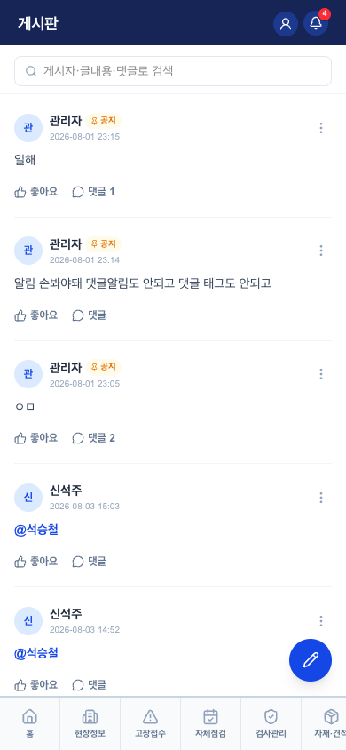
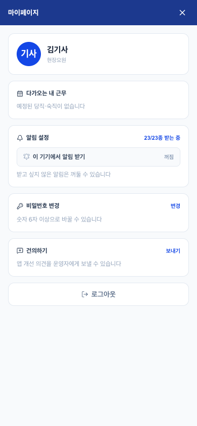

게시판 · 마이페이지 v0.1
1. 게시판 — 사내 카톡방의 대체재

| 요소 | 핵심 규칙 |
|---|---|
| 피드 | 글+사진, 좋아요, 댓글(replyToId — 건의함도 같은 구조 차용). 공지는 상단 고정성 표시 |
| @멘션 | 자동완성(@이름·@모두) → 대상에게 푸시. 웹 콘솔 게시판(RoomAdmin)과 같은 데이터·같은 알림 |
| 읽음 처리 | 탭 여는 순간 전체 읽음(profiles.feed_read_at) — 글 단위 아님(의도된 단순화). 플로팅 배지=안읽음, 노랑=멘션 |
| 알림 4종 | 멘션 / 공지 / 내 글에 댓글 / (건의함) 내 건의에 답글 |
2. 마이페이지 — 개인 설정의 전부

| 요소 | 핵심 규칙 |
|---|---|
| 프로필 | 이름·역할·당직 순번·입사연차 |
| 다가오는 내 근무 | 당직·숙직 5건 미리보기 |
| 알림 설정 | 기기 푸시 스위치("이 기기에서 알림 받기" — 이걸 켜야 알림이 옴, 기기마다) + 회사가 켠 알림 중 개인별 끄기. 크론 미구현 예약형은 자동 숨김 |
| 비밀번호 변경 | 숫자 6자+ (강제 변경과 같은 폼) |
| 건의하기 | 메일(차호근) + DB 저장 → 답글 스레드(본인+관리자만, 2026-08-04 추가). 답글 시 푸시 |
4. QA 체크포인트 — 2026-08-04 검증
- ✅ 게시판 배지 = 진짜 안읽음 (홈 문서 3번과 동일)
- ✅ 콘솔-모바일 게시판 알림 동등 (댓글알림·멘션 8/3 배포로 해소 — 콘솔 QA 8장)
- ✅ 건의함 흐름 (제출→목록→관리자 답글→푸시) — 2026-08-04 개발자 계정으로 검증
- 기기 푸시 등록률이 알림 체계 전체의 목줄 — 구일 4/20명. 온보딩 체크리스트 5장 + 콘솔 현황 카드로 대응 중
6. 화이트라벨 — 구일전용 → 타사 일반화
| # | 지금 | 어떻게 |
|---|---|---|
| 1 | 건의하기 수신 = 차호근 메일 (FEEDBACK_TO) + 구일 네이버 SMTP | 건의 = 플랫폼(Eleva 운영자)에게 오는 것이 맞음 — 서비스 개선 채널이므로. DB 저장이 이미 주 채널, 메일은 보조. SMTP 종속은 중앙 발송으로 |
| 2 | 게시판·마이페이지 나머지 | 전부 DB 기반 — 화이트라벨 대상 없음 |
변경 이력
| 버전 | 날짜 | 변경 |
|---|---|---|
| v0.1 | 2026-08-04 | 최초 작성 — 두 화면 묶음, 같은 날 추가된 건의함 답글·기기 등록 이슈 반영 |